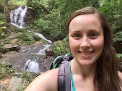
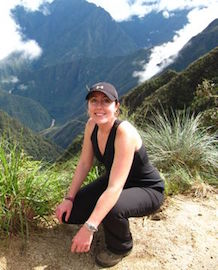
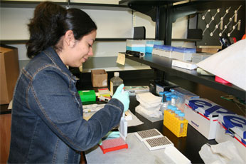
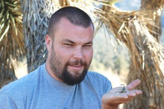
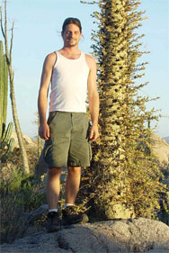
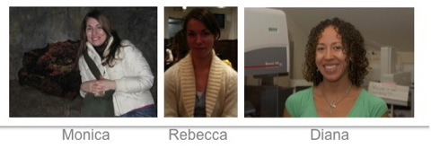
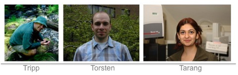
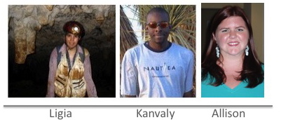
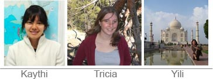

Previous members of the Arachnology Lab
Michelle Locke
Scientific Assistant
(2015-2016)

Michelle Locke completed her MSc at Carleton University, in Ottawa ON. Michelle's MSc thesis was a revision of the flower fly genus Dasysyrphus (Diptera: Syrphidae) under the supervision of Dr. Jeff Skevington of Agriculture and Agri-Food Canada. before coming to the AMNH she worked as a contract Research Technician at the Canadian National Collection of Insects, Arachnids and Nematodes in Ottawa, ON. Her contract work focused on the Syrphidae collection, doing identifications, curation, databasing, species level conservation assessments, macro photography of specimens and work on a field guide to the Syrphidae. She came to the Division of Invertebrate Zoology, AMNH in 2014.
Pamela Horsley
Scientific Assistant
(2013-2014)

Pamela completed her MSc in Entomology at McGill University in 2009 and her thesis research included a systematic revision of the hyper-diverse leaf litter-inhabiting genus
Trachyphloeomimus (Curculionidae, Entiminae). In 2009, she was hired through an NSF grant as the Entomology Collection Manager at the San Diego Natural History Museum. Her research and work experience has allowed her to do field work in central and northeast Mexico, as well as the south-western United States. She is heavily involved with the Entomological Collections Network (ECN),
Entomological Collections Network, serving as president and assisting with coordination of the annual meetings.
Scientific Assistant
(2010-2012)

Ofelia completed her B.Sc. in Biology at the Facultad de Ciencias, Universidad Nacional Autónoma de México (UNAM) in 2000, based on a floristic survey of tropical dry forest. After graduating, she assisted in the curation of the Section of Odonata in the Insects National Collection, Instituto de Biología, UNAM, focusing on the Odonata of Jalisco. Her experience in the field includes collecting arachnids, insects and plants in Central and Southern Mexico. After volunteering in Lorenzo Prendini's molecular lab for several years, she came to work as a Scientific Assistant in January 2010, spending much time working on solifuges and scorpions in the molecular lab.
Jeremey Huff
Scientific Assistant
(2007-2010)

Jeremy began working as a Scientific Assistant in the Division of Invertebrate Zoology in 2007. His main research interest is the systematics of the whip scorpions (Thelyphonida). Huff has extensive field experience collecting arachnids in Belize, Cameroon, Costa Rica, Dominican Republic, French Guiana, Grand Cayman, Guatemala, Guinea-Bissau, Guyana, Malaysia, Martinique, Mexico, Senegal, South Africa and the southwestern USA. He did 10 field trips for the AMNH and has collected several thousand specimens and discovered many new species.
Randy Mercurio
Scientific Assistant
(2002-2007)
|  |
Randy joined the Division of Invertebrate Zoology, AMNH, as a full-time employee in 2002, after completing a B.A. in Biology at New York University. He worked as Scientific Assistant to Lorenzo Prendini and managed the curation of the Arachnid and Myriapod Collections. Randy is a professional photographer and was responsible for producing many of the photographs in publications and the group's website. His other research interests include the taxonomy, natural history, ecology and biogeography of centipedes in North America, as well as their functional morphology. He has collected arachnids and myriapods in Arizona, California, Connecticut, Florida, Massachusetts, New York, Nevada, Rhode Island, and Mexico. |
Former Laboratory Technicians
Diana Pietri (2003-2005), Tarang Sharma (2003-2004), Rebecca Budinoff (2004), Kenneth (Tripp) MacDonald (2005), Monica Mosier (2006), Ligia Benavides (2006-2007), Torsten Dikow (2007), Kanvaly Bamba (2007-2008), Allison Kerwin (2008), Kaythi Han (2008), Yili Lim (2008-2009), and Tricia Rubi (2008-2009) have all worked in the Molecular Systematics Laboratory of the Division of Invertebrate Zoology, AMNH, isolating, amplifying, and sequencing scorpion, spider, amblypygid, solifuge, uropygid and schizomid DNA. All assisted with the training of postdoctoral fellows, undergraduate and high school students, and scientists visiting the lab.



